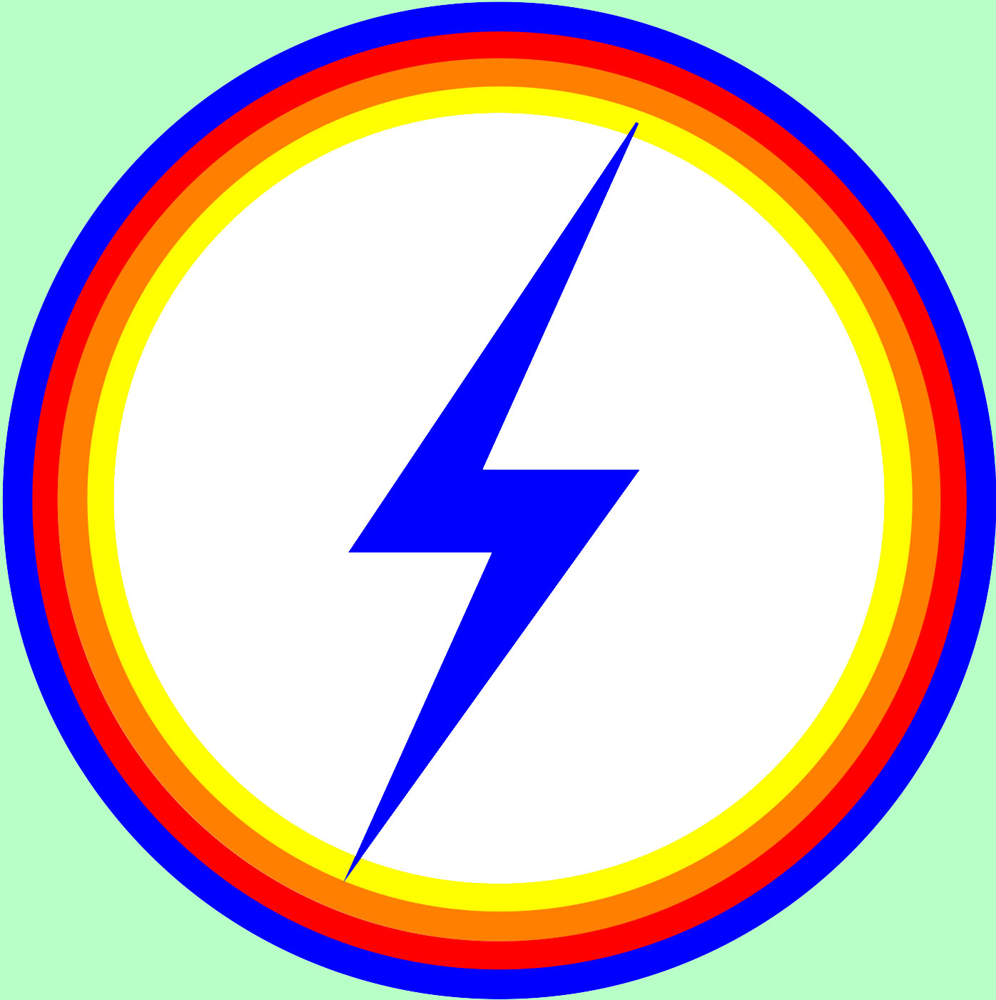
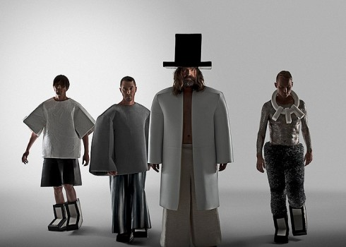

The Amplifetes er et svensk synthpop band bestående af Henrik Jonback, Henrik Korpi, Tommy Spaanheden og Peter Ågren.
Medlemmerne har haft stor succes med sangskrivere og producere, og bland andet arbejdet med artister som Kelis, Britney Spears, Madonna, Kylie Minoque og Grandmaster Flash.
Bandet har været aktivt siden år 2008 og i 2010 udgav de deres debut album The Amplifetes.
Efter udgivelsen af albummet, turnerede bandet i forskellige lande i Europa i to år.
